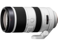

该镜头的自动追踪性能得到4倍提升，能快速精准的进行自动追踪对焦。并搭载了纳米抗反射涂层，能有效抑制眩光和鬼影。采用含2片ED镜片，18片12组的镜头结构。内置9片光圈叶片，最近对焦距离1.5m，最大放大倍率为0.27倍。
此焦段的王者
1，焦段实用，搭配蔡司定焦可以无视720G了。（720G比较中庸） 2，样子极骚，索尼才叫白，佳能那叫灰。 3，对焦比第一代快很多，坚决一步到位。 4，画质对得起价格，全开个焦段没有缺点。 5，做工对的起G标
1，重，那是没办法的 2，变焦环有点涩不太流畅，也没有锁定将来松了怎么办 3，外变焦比较突兀（不过看看死马黑科技内变焦什么体积哟） 4，光圈有点小，最近对焦距离长，不适合室内（废话）
非常满意
焦段合理，成像优秀。
外变焦突兀。
比一代有进步 主要是对焦速度
画质好 性价比高 对焦快 外观威武
光圈稍微有点小